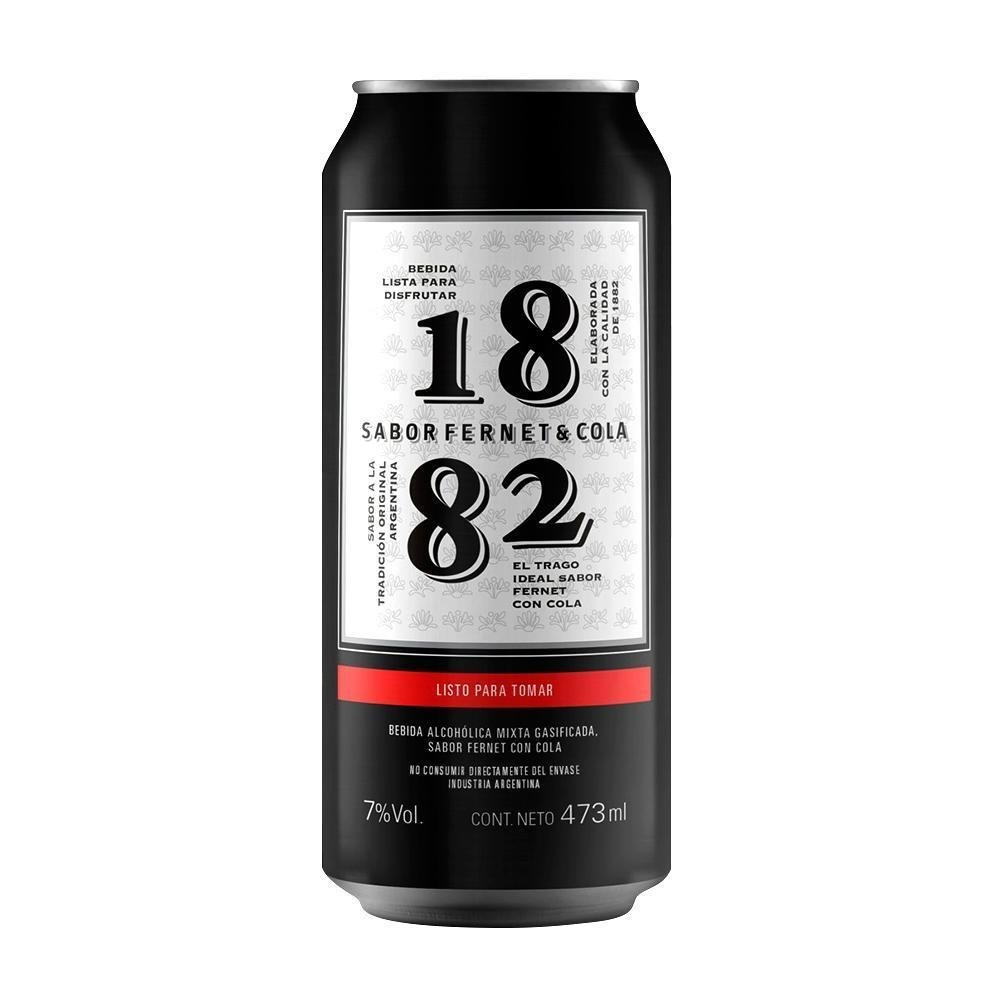

Fernet 1882 con Cola
$800,00
FERNET 1882 ES EL PRIMER FERNET ARGENTINO DE ORIGEN CORDOBÉS. FUE CATADO A CIEGAS POR MÁS DE 20.000 FANÁTICOS
CORDOBESES DE FERNET QUE ANTES DE SU LANZAMIENTO LE DIERON LA NOTA MÁXIMA EN ESPUMA Y SABOR, UBICÁNDOLO ENTRE
LOS MEJORES FERNET. ES CONOCIDO POR SU CALIDAD Y POR SUS KITS ESPECIALES, EDICIONES LIMITADAS QUE SIEMPRE SON
MUY APRECIADAS POR LOS SEGUIDORES DE FERNET 1882.